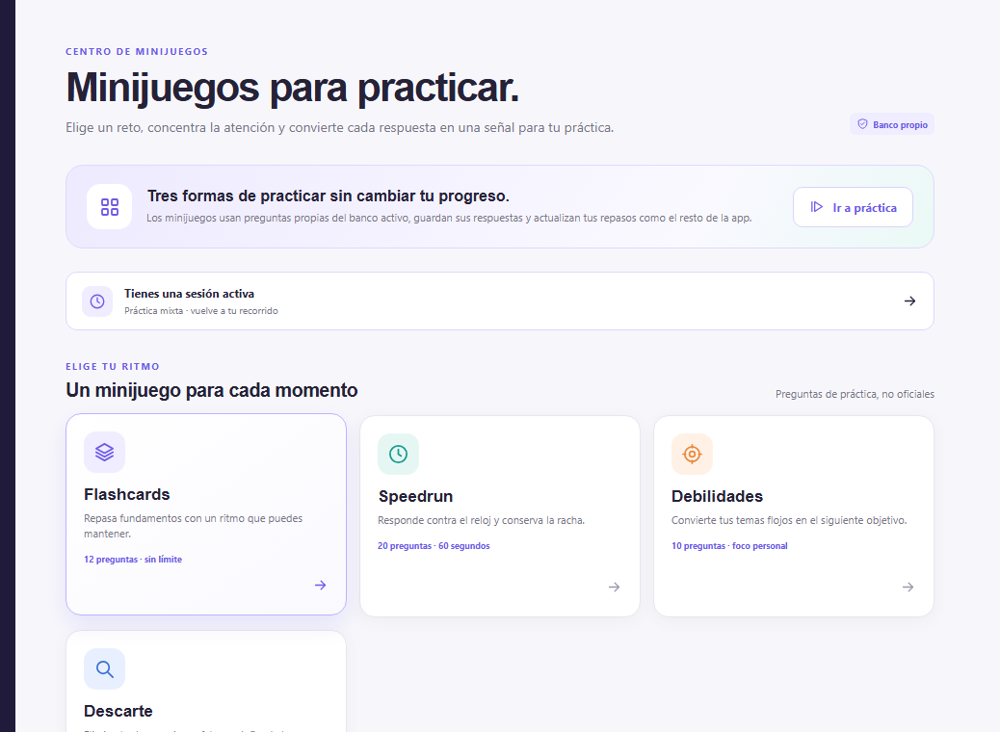

Minijuegos para estudiar TAI
Los minijuegos convierten el repaso en una sesión corta y medible. No sustituyen un simulacro completo, pero sirven para mantener viva la información cuando el tiempo es limitado.
Abrir minijuegos Practicar por temas

Los cuatro, en una tabla
Los cuatro usan el mismo banco y las mismas explicaciones por opción. Lo que cambia es el formato y, con él, lo que entrenas.
| Minijuego | Preguntas | Cómo funciona | Para qué sirve |
|---|---|---|---|
| Flashcards | 12 | Sin límite de tiempo, con la explicación después de cada respuesta | Recorrer conceptos de los cuatro bloques sin prisa |
| Speedrun | 20 en 60 segundos | Contra el reloj, con racha de aciertos. También existe la versión sin cronómetro | Localizar rápido lo que todavía no dominas |
| Debilidades | 10 | Se concentra en los temas con peor rendimiento o con repaso pendiente | Atacar justo lo que se te está resistiendo |
| Descarte | 10 | Hay que eliminar las tres opciones falsas una a una; la que queda es la respuesta | Entrenar la eliminación, que es lo que decide el examen |
Por qué el descarte tiene su propio minijuego
En el examen cada error descuenta un tercio del valor de un acierto. Con las cuatro opciones intactas, contestar al azar ni sube ni baja la nota. En cuanto descartas una sola opción, responder pasa a tener valor positivo.
Es decir: la habilidad que decide si compensa contestar o dejarlo en blanco no es recordar la respuesta, sino saber eliminar las que no lo son. Por eso el descarte se practica aparte, y por eso cada opción incorrecta del banco lleva su nota explicando qué falla en ella.
Una forma de usarlos
- Alterna una ronda de flashcards con una práctica por tema, para no quedarte solo en el reconocimiento.
- Reserva el speedrun para los días con poco tiempo: veinte preguntas en un minuto dan para mucho más de lo que parece.
- Cierra con una ronda de debilidades y vuelve a leer las notas de las que fallaste.
- Repite el mismo tema en días distintos. La recuperación espaciada pesa más que encadenar muchas sesiones seguidas.
El banco de preguntas es propio, práctico y no oficial. Los minijuegos no reproducen el examen ni sus cortes.